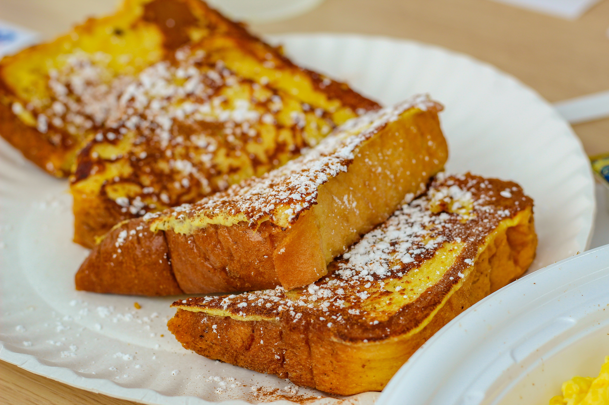

Fluffy French Toast

Golden brown french toast sprinkled with powdered sugar!
Ingredients
- 1/4 cups all-purpose flour
- 1 cup milk
- pinch of salt
- 3 eggs
- 1/2 teaspoon ground cinnamon
- 1 teaspoon vanilla extract
- 1 tablespoon white sugar
- 12 thick slices of bread
Steps
Step 1
Measure flour into a large mixing bowl. Slowly whisk in the milk.
Whisk in the salt, eggs, cinnamon, vanilla extract and sugar until smooth.Step 2
Heat a lightly oiled griddle or frying pan over medium heat.Step 3
Soak bread slices in mixture until saturated.
Cook bread on each side until golden brown. Serve hot.